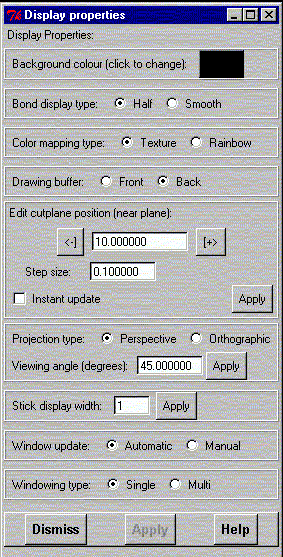

**************************************************************************
Define display properties of the system
Leif Laaksonen CSC 1997
**************************************************************************
Define a variety of properties connected to how the molecular system
is displayed on the screen.
- Define the background colour. To change colour click at the coloured
button.
- Define the way how the molecular bonds are displayed.
- Half of the bond distance is displayed in the atom colour
(half).
- The bond is coloured smoothly from one atom colour to the
other atom colour (smooth).
- Define the way the solid surfaces (polygons) are coloured. This
property is used when a surface is coloured according to a scale
value between 0.0 and 1.0, where 0.0 is blue, 1.0 is red and 0.5
is green. The two possibilities are:
- Choose texture to use an one dimensional texture mapping.
- or rainbow to use a simple interpolation scheme.
- Control into which buffer the drawing is directed. Usually the drawing
is directed to the back buffer and the buffers are swapped when
the scene is drawn. Sometimes it is useful to follow the display of the objects
while they are drawn. This vcan be done by directing the draw into the
front buffer. The two possibilities are:
- Draw into the front buffer. This is good for tracing bugs
in the display driver.
- Draw into the back buffer. Normal drawing.
- Facility to control the near clipping plane.
- Define the distance to the near clipping plane.
Press the - and + buttons to decreases
or increases the distance to the
near clipping plane using the defined step length.
- The new view will not be displayed before the Display
command is applyed or the gOpenMol logo is pressed.
To update the display after the changed value click
the "Instant update" button or press the Apply button..
- Facility to control the projection type. The two possible
projections are:
- in perspective projection objects further away are
are smaller than those in the front
- and in orthographic projection object size is independent
of distance.
For the perspective projection it is also possible to define the viewing
angle. Write ne value and press the "Apply" button.
- Define the pixel width of the molecular stick display.
- When a new scene is drawn into the buffer the scene can be
update automaticly or it can wait until the command display
is requested. Moving windows can blur the display. Then window
can now be redrawn automaticly or it can wait for the (manual)
display command.
- It is possible to display some properties in multi windows.
Turn the multi window display on to display both a structure
and a ldp map at the same time.

Line command: see define command
**************************************************************************
LUL/1997
**************************************************************************